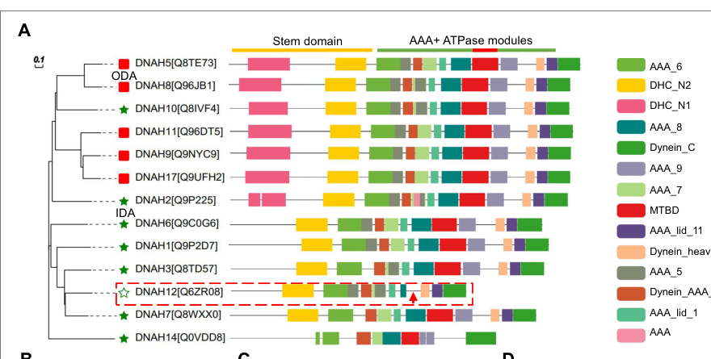
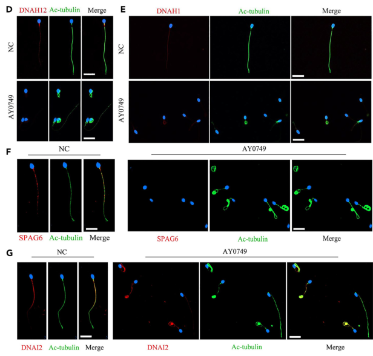

DNAH12 (dynein axonemal heavy chain 12, also known as DHC3/DNHD2) is an inner dynein arm (IDA) heavy chain of the sperm flagellar axoneme. It is the shortest member of the axonemal dynein heavy chain family (3092 aa): it keeps the N-terminal stem and the ATP-binding AAA1-AAA4 modules, but lacks a typical microtubule-binding domain at the tip of the stalk. It is expressed in human trachea and testis; human testis single-cell RNA data place its expression mainly in spermatocytes and early spermatids. In mice, Dnah12 is expressed most highly in testis and at lower levels in lung, trachea and oviduct. The protein lies along the sperm flagellum. Rather than acting as an independent force-generating motor, DNAH12 is needed to assemble the sperm IDA. It binds the IDA components DNALI1 and DNAH1 and recruits them to the axoneme. It also binds the radial spoke head proteins RSPH1, RSPH9 and DNAJB13 and helps keep the central pair stable. DNAH12 sits near radial spoke 1, because it is depleted from sperm when the RS1 protein IQUB is lost. The recruitment hierarchy is not fully settled: one patient studied by another group lost DNAH12 and the central-pair protein SPAG6 but kept DNAH1 in the flagellum. Biallelic loss-of-function variants cause asthenoteratozoospermia with multiple morphological abnormalities of the sperm flagella (MMAF), IDA loss and central-pair loss (spermatogenic failure 100, SPGF100). Dnah12 knockout and knock-in mice reproduce this male infertility. In these mouse models, tracheal ciliary beating and morphology were preserved; knockout mice also retained tracheal axonemal ultrastructure and comparable DNALI1 and DNAH1 abundance and localization in trachea and oviduct. The affected men reported no primary ciliary dyskinesia symptoms. These observations support a preferential requirement for DNAH12 in sperm flagella. Affected men and mice can achieve fertilization and offspring by ICSI. The mouse ortholog Dnah12 (MGI:107720, Q3V0Q1, 3086 aa) has the same domain layout. DNAH12 belongs to the inner-arm dynein heavy chain group with DNAH1, DNAH2, DNAH3, DNAH6, DNAH7, DNAH10 and DNAH14. One exome study describes it as the closest paralog of DNAH1 (PMID:34089056). Its established relationship with DNAH1 is physical: DNAH12 binds DNAH1 and is needed to recruit it.
| GO Term | Evidence | Action | Reason |
|---|---|---|---|
|
GO:0005524
ATP binding
|
IEA
GO_REF:0000002 |
KEEP AS NON CORE |
Summary: InterPro-based ATP binding. UniProt annotates intact ATP-binding P-loop motifs in AAA1-AAA4 of DNAH12, so nucleotide binding by the motor head is plausible even though the protein lacks a canonical microtubule-binding domain.
Reason: The P-loops are retained, so the inference is structurally reasonable, but ATP binding alone is uninformative and has not been tested experimentally for DNAH12. Its physiological role is assembly of the sperm inner dynein arm, not catalysis on its own.
Supporting Evidence:
file:human/DNAH12/DNAH12-uniprot.txt
FT BINDING 1253..1260
|
|
GO:0007018
microtubule-based movement
|
IEA
GO_REF:0000002 |
MARK AS OVER ANNOTATED |
Summary: Generic dynein heavy chain family mapping. DNAH12 lacks the microtubule-binding domain that couples ATP hydrolysis to translocation along microtubules. The experimental data show that it assembles other inner dynein arm components rather than acting as a motor itself.
Reason: With no microtubule-binding domain, there is no evidence that DNAH12 itself performs microtubule-based movement. Its contribution to sperm motility is through IDA assembly and central-pair stability, as the authors themselves conclude ("DNAH12 likely collaborates with other members to carry out its functions").
Supporting Evidence:
PMID:40146200
Notably, it is the shortest member and lacks a typical microtubule-binding domain (MTBD) in the DNAH family.
PMID:40146200
Therefore, DNAH12 likely collaborates with other members to carry out its functions.
|
|
GO:0007286
spermatid development
|
IMP
PMID:40146200 Deficiency in DNAH12 causes male infertility by impairing DN... |
KEEP AS NON CORE |
Summary: Biallelic DNAH12 variants in six families, and two mouse models (Dnah12-/- and Dnah12mut/mut), cause asthenoteratozoospermia with axonemal defects and compromised sperm development.
Reason: The annotation is correct but broad. The defect is specifically in flagellar axoneme organization, which is captured more precisely by the sperm axoneme assembly IMP annotation from the same paper.
Supporting Evidence:
PMID:40146200
disruption of DNAH12 leads to failed recruitment of DNALI1 and DNAH1 to IDAs and compromised sperm development
|
|
GO:0007288
sperm axoneme assembly
|
IEA
GO_REF:0000117 |
ACCEPT |
Summary: ARBA prediction. It agrees with the experimental IMP annotation from PMID:40146200.
Reason: Consistent with the direct experimental evidence for DNAH12.
Supporting Evidence:
PMID:40146200
DNAH12 plays a crucial role in the proper organization of axoneme in sperm flagella, but not cilia, by recruiting DNAH1 and DNALI1 in both humans and mice.
|
|
GO:0007288
sperm axoneme assembly
|
IMP
PMID:40146200 Deficiency in DNAH12 causes male infertility by impairing DN... |
ACCEPT |
Summary: Patient and mouse sperm show IDA impairment and central-pair loss. DNAH12 is required to recruit DNAH1 and DNALI1 into the flagellar axoneme.
Reason: This is the core biological process. Two independent groups report the same axonemal phenotype: IDA and central-pair defects in human patients and in knockout mice.
Supporting Evidence:
PMID:40146200
Transmission electron microscopy (TEM) revealed pronounced axonemal abnormalities, including inner dynein arms (IDAs) impairment and central pair (CP) loss in sperm flagella of the patients.
PMID:42321500
DNAH12 deficiency in patient sperm was accompanied by loss of DNAH1, DNALI1, RSPH9, and SPAG6 and disruption of the classical "9 + 2" axonemal structure.
|
|
GO:0008569
minus-end-directed microtubule motor activity
|
IEA
GO_REF:0000002 |
MARK AS OVER ANNOTATED |
Summary: Family-level InterPro mapping from the dynein heavy chain P-loop domain. DNAH12 is unusual in the family: it ends after AAA5 (3092 aa) and lacks the microtubule-binding domain needed for ATP-sensitive microtubule binding and motor direction.
Reason: Directional microtubule motor activity needs a microtubule-binding domain. DNAH12 lacks one, and no motility assay has been done on it. PAINT places this activity at a deep dynein heavy chain node (PTN000743491, PANTHER 19 family PTHR10676), and mouse Dnah12 inherits it by IBA. The argument here is therefore one of lineage-specific loss: DNAH12 lost the microtubule-binding domain after that node, so the inherited function does not apply. Human DNAH12 itself carries no IBA for this term, because PANTHER 19 classifies it in a different family (PTHR46532) from its mouse ortholog. The term is inherited from the family rather than demonstrated, and it probably misstates what DNAH12 does. Not marked REMOVE because the authors describe an "MT-like" region in their domain diagram, so residual microtubule contact cannot be ruled out without biochemistry.
Supporting Evidence:
PMID:40146200
we found that DNAH12 is a distinctive IDA lacking the microtubule-binding domain (MTBD), which is crucial for ATP-sensitive microtubule binding and motor direction control
|
|
GO:0030286
dynein complex
|
IEA
GO_REF:0000002 |
MODIFY |
Summary: Correct but very general. DNAH12 is an inner dynein arm heavy chain that interacts with the IDA components DNAH1 and DNALI1.
Reason: The specific complex is the axonemal inner dynein arm. Phylogenetic classification and co-immunoprecipitation with DNAH1 and DNALI1 place DNAH12 there.
Proposed replacements:
inner dynein arm
Supporting Evidence:
PMID:40146200
Mechanistically, DNAH12 was confirmed to interact with two other IDA components DNALI1 and DNAH1
|
|
GO:0031514
motile cilium
|
IEA
GO_REF:0000044 |
KEEP AS NON CORE |
Summary: Mapped from the UniProt subcellular location "Cell projection, cilium, flagellum". The sperm flagellum is a motile cilium in GO; mouse tracheal cilia also show DNAH12 staining. The broad location is retained as non-core alongside the specific sperm flagellum annotations.
Reason: This location term encompasses the sperm flagellum and does not by itself assert a requirement for somatic cilium function. PMID:40146200 reports preserved mouse tracheal ciliary beating and morphology, comparable knockout tracheal axonemal ultrastructure, and comparable DNALI1/DNAH1 abundance and localization in knockout trachea and oviduct. The human patients reported no PCD symptoms; this is clinical history, not a human ciliary-beat assay. These observations distinguish the demonstrated sperm assembly role from the tested somatic cilia without claiming that every possible ciliary function is unaffected.
Supporting Evidence:
PMID:40146200
Noteworthy, DNAH12 deficiency did not show effects on cilium organization and function.
|
|
GO:0036126
sperm flagellum
|
IDA
PMID:40146200 Deficiency in DNAH12 causes male infertility by impairing DN... |
ACCEPT |
Summary: Immunofluorescence shows DNAH12 along the sperm flagellum, and the staining is lost in patient sperm.
Reason: Direct experimental localization; this is the core cellular location.
Supporting Evidence:
PMID:40146200
DNAH12 plays a crucial role in the proper organization of axoneme in sperm flagella
|
|
GO:0036126
sperm flagellum
|
IEA
GO_REF:0000117 |
ACCEPT |
Summary: ARBA prediction, consistent with the IDA annotation.
Reason: Consistent with the direct experimental localization.
|
|
GO:0045505
dynein intermediate chain binding
|
IEA
GO_REF:0000002 |
UNDECIDED |
Summary: Family-level mapping from the dynein heavy chain N-terminal region. No DNAH12 interaction with a dynein intermediate chain has been reported; the partners shown are DNAH1, DNALI1 and radial spoke head proteins.
Reason: Inner dynein arm heavy chains differ in whether they assemble with intermediate chains, and no DNAH12 data address this. The IP/MS interactome in PMID:40146200 could settle it, but its supplementary tables are not in our cache. The case against the term is substantial. The PAINT IBD for this term at PTN000743491 is seeded only by a Dictyostelium cytoplasmic dynein heavy chain (dictyBase:DDB_G0276355), so the family-level inference traces to cytoplasmic-dynein intermediate chain biology. DNAH12 partners with DNALI1 (p28), which is characteristic of the single-headed IDA species that lack the I1/f intermediate chain complex. Left UNDECIDED rather than marked as an over-annotation until the IP/MS data are checked.
|
|
GO:0051959
dynein light intermediate chain binding
|
IEA
GO_REF:0000002 |
ACCEPT |
Summary: DNAH12 interacts with the IDA light intermediate chain DNALI1 (p28). Loss of DNAH12 abolishes DNALI1 recruitment to the sperm axoneme.
Reason: Co-immunoprecipitation from mouse testis supports the family-level inference, and UniProt maps the interaction to the stem region. A second group independently recovered DNAH12 with DNALI1 by IP-MS from human sperm. Binding DNALI1 is the molecular basis of DNAH12's role in IDA assembly.
Supporting Evidence:
PMID:36792588
MS identified both DNAH1 and DNAH12 as potential interacting proteins of DNALI1
PMID:40146200
further in vitro Co-IP assays validated that the Stem domain of DNAH12 indeed mediates interactions with DNALI1
PMID:40146200
DNAH12 interacts with other IDA components like DNALI1 and DNAH1 in mouse testes, and disruption of DNAH12 impaired the recruitment of dynein components into sperm flagella.
|
|
GO:0036159
inner dynein arm assembly
|
IMP
PMID:40146200 Deficiency in DNAH12 causes male infertility by impairing DN... |
NEW |
Summary: Proposed new annotation. DNAH12 is required to incorporate DNAH1 and DNALI1 into the sperm inner dynein arm. Without it, IDAs are impaired in patient and mouse sperm.
Reason: DNAH12 does part of the work of this process: it is itself an IDA heavy chain and binds the subunits it recruits. It is not an upstream regulator or a substrate. The term is more specific than sperm axoneme assembly and states the mechanism. PAINT already asserts this term at node PTN008951089, and mouse Dnah12 (Q3V0Q1) carries it by IBA. Human DNAH12 lacks it only because PANTHER 19 places the human protein in PTHR46532 rather than PTHR10676, so the NEW annotation fills a classification gap rather than making a new claim. The comparator check passes: the PTN008951089 IBD is seeded by DNAH3 (Q8TD57), DNAH7 (Q8WXX0) and MGI:2683040, all structural IDA heavy chains rather than assembly factors (interpro/panther/PTHR10676/PTHR10676-paint.tsv).
Supporting Evidence:
PMID:40146200
disruption of DNAH12 leads to failed recruitment of DNALI1 and DNAH1 to IDAs and compromised sperm development
|
Q: Should PANTHER reunite the DNAH12 orthologs? In PANTHER 19, human DNAH12 (Q6ZR08) sits in subfamily PTHR46532:SF11 of family PTHR46532 ("male fertility factor kl5"), where no PAINT annotation reaches it, whereas mouse Dnah12 (Q3V0Q1) sits in subfamily PTHR10676:SF255 of family PTHR10676. Both subfamilies are correctly named "dynein axonemal heavy chain 12", so PANTHER identifies the protein correctly; only the family-level placement differs. As a result, mouse inherits IBAs for inner dynein arm, inner dynein arm assembly, sperm flagellum assembly and dynein light intermediate chain binding, and human inherits none. InterPro and UniProt cross-references put both proteins in PTHR22878:SF70, so the two PANTHER classification routes also disagree with each other.
Q: Is DNAH1 recruitment strictly dependent on DNAH12? The eLife study (PMID:40146200) reports loss of DNAH1 from DNAH12-deficient sperm, but patient AY0749 (PMID:39071892) kept flagellar DNAH1 while losing DNAH12 and SPAG6, and DNAH12 persists in DNALI1-mutant sperm that lack DNAH1 (PMID:36792588). Do allele type, assay or species account for the difference?
Q: Does DNAH12 hydrolyse ATP, and does its "MT-like" stalk region contact the microtubule at all, or is it purely a structural scaffold within the sperm IDA?
Q: Why are the tested mouse tracheal ciliary readouts preserved despite DNAH12 expression there, while sperm flagellar assembly is impaired? Do differences in inner-arm composition or compensatory assembly explain this contrast, and are additional human ciliary-function measurements consistent with the reported absence of PCD symptoms?
Q: Two papers report sperm head abnormalities as well as flagellar defects (PMID:42321500). Do these reflect a separate role in manchette or head shaping, or a secondary effect of failed flagellar assembly?
Experiment: Cryo-ET of wild-type and Dnah12-/- mouse sperm axonemes to place DNAH12 within the 96-nm repeat and identify which IDA species it belongs to.
Type: cryo-electron tomography
Experiment: Express recombinant DNAH12 motor head and test ATPase activity and microtubule co-sedimentation, to decide whether the motor-activity annotations should be removed.
Type: biochemical ATPase and microtubule-binding assays
The research report should be a detailed narrative explaining the function, biological processes, and localization of the gene product. Citations should be given for all claims.
You should prioritize authoritative reviews and primary scientific literature when conducting research. You can supplement
this with annotations you find in gene/protein databases, but these can be outdated or inaccurate.
We are specifically interested in the primary function of the gene - for enzymes, what reaction is catalyzed, and what is the substrate specificity? For transporters, what is the substrate? For structural proteins or adapters, what is the broader structural role? For signaling molecules, what is the role in the pathway.
We are interested in where in or outside the cell the gene product carries out its function.
We are also interested in the signaling or biochemical pathways in which the gene functions. We are less interested in broad pleiotropic effects, except where these elucidate the precise role.
Include evidence where possible. We are interested in both experimental evidence as well as inference from structure, evolution, or bioinformatic analysis. Precise studies should be prioritized over high-throughput, where available.
The target is human DNAH12, dynein axonemal heavy chain 12, also called DHC3—not the distinct gene DNAH3. The supplied UniProt accession is Q6ZR08; the primary literature independently identifies human DNAH12/DHC3 as an axonemal-dynein-family protein. Its reported AAA+ dynein domains accord with that assignment, but, unusually, sequence/domain analysis finds no conventional microtubule-binding domain (MTBD). The Q6ZR08 accession and additional synonyms in the question are supplied identification information; the papers examined do not independently map every synonym to that accession. (yang2025deficiencyindnah12 pages 2-3, yang2025deficiencyindnah12 pages 13-15, yang2025deficiencyindnah12 media 210abf3e)
Best-supported primary function: DNAH12 helps build and maintain the inner dynein arm (IDA) machinery of the sperm flagellar axoneme, particularly by enabling localization of DNALI1 and DNAH1 during sperm development. This is an experimentally supported assembly/recruitment role, not proof that isolated DNAH12 itself generates force. Sperm lacking functional DNAH12 have defective IDAs, frequently lose the central microtubule pair, and move poorly or not at all. (yang2025deficiencyindnah12 pages 15-16, yang2025deficiencyindnah12 pages 16-18, yang2025deficiencyindnah12 pages 8-10, yang2025deficiencyindnah12 pages 5-6)
The following comparison distinguishes direct DNAH12 findings from indirect support:
| Evidence/study | DNAH12-specific observation | Interpretation/limit |
|---|---|---|
| Wu et al., February 2023, Cell Death & Disease — DOI | Immunoprecipitation–mass spectrometry of human sperm identified DNAH12 and DNAH1 as candidate DNALI1-associated proteins. DNAH12 remained detectable in DNALI1-mutant sperm, although DNAH1 and DNAH7 were lost. (wu2023dnali1deficiencycauses pages 3-5, wu2023dnali1deficiencycauses pages 5-8) | Supports an IDA assembly relationship and a hierarchy in which DNAH12 localization does not require DNALI1. Candidate association by IP–MS did not establish direct DNAH12–DNALI1 binding or assign DNAH12 to a native dynein subtype. |
| Geng et al., 19 July 2024, iScience — DOI | Biallelic DNAH12 variants occurred in 3/1,532 (0.2%) infertile Chinese men. In patient AY0749, flagellar DNAH12 was absent and SPAG6 was largely lost, whereas DNAH1 and DNAI2 were preserved; sperm showed severe asthenozoospermia and central-pair loss. (geng2024furtherevidencefrom pages 7-9, geng2024furtherevidencefrom pages 2-4) | Human genetics and sperm localization support a causal flagellar role, especially in central-pair integrity. Only three cases were found and only one underwent detailed structural and protein analysis; preservation of DNAH1 differs from later patients. |
| Yang et al., eLife reviewed preprint 27 August 2024; version of record 27 March 2025 — DOI | Screening 796 infertile men identified recessive DNAH12 variants in six unrelated families. Patient sperm and two mouse models showed DNAH12 loss, impaired IDAs and central-pair loss. Mouse-testis reciprocal co-IP demonstrated association with DNALI1 and DNAH1; DNAH12 loss prevented their flagellar recruitment. Tracheal ciliary motility and ultrastructure were not detectably affected. (yang2025deficiencyindnah12 pages 13-15, yang2025deficiencyindnah12 pages 15-16, yang2025deficiencyindnah12 pages 1-2, yang2025deficiencyindnah12 pages 12-13, yang2025deficiencyindnah12 pages 2-3) | Strongest mechanistic evidence that DNAH12 acts upstream in sperm-flagellar IDA assembly. The respiratory-cilia conclusion rests mainly on mouse observations and absence of reported PCD in affected humans; it does not exclude subtle or tissue-specific ciliary effects. |
| Hu et al., January 2025, Cell Communication and Signaling — DOI | IQUB-associated radial-spoke-1 loss reduced DNAH12 and DNAH7 in human patient and knockout-mouse sperm, placing these IDA proteins near RS1. (hu2025iqubmutationinduces pages 8-12) | Independent but indirect support for DNAH12 coupling to the radial-spoke–IDA neighborhood. IQUB—not DNAH12—was perturbed, and the study did not demonstrate direct binding or uniquely assign DNAH12 to a specific dynein species. |
Table: Four primary studies define DNAH12 as a sperm-flagellar inner-dynein-arm assembly factor while highlighting unresolved questions about direct motor activity, exact dynein-subtype assignment, and respiratory-cilia relevance.
Axonemal dynein arms normally use ATP-dependent activity to produce the microtubule sliding that underlies ciliary or flagellar bending; IDAs are particularly important for shaping bends. DNAH12 belongs to this protein family and contains predicted AAA+ ATPase modules and an N-terminal stem implicated in protein association. Accordingly, ATP is the plausible biochemical substrate of a putative DNAH12 ATPase. However, the cited gene-specific studies do not demonstrate purified DNAH12 ATP hydrolysis, a measured catalytic rate, ATP-dependent microtubule movement, or substrate specificity. Its missing MTBD makes it especially inappropriate to annotate DNAH12 as an independently demonstrated, conventional microtubule-walking motor. The established function is association with, and assembly of, the motile axoneme; its precise catalytic contribution remains unresolved. (yang2025deficiencyindnah12 pages 13-15, yang2025deficiencyindnah12 pages 1-2, yang2025deficiencyindnah12 pages 18-19, yang2025deficiencyindnah12 media 210abf3e)
The strongest mechanistic study used mouse-testis immunoprecipitation/mass spectrometry and reciprocal co-immunoprecipitation to associate DNAH12 with the IDA proteins DNALI1 and DNAH1. An expressed DNAH12 stem fragment—amino acids 1–1212 of the construct studied—also co-immunoprecipitated with DNALI1. In Dnah12-null spermatids, DNALI1 and DNAH1 were detectable in round cells but were poorly recruited to elongating flagella; their levels and flagellar signals were reduced in affected sperm. Conversely, DNAH12 remained visible in sperm from a man with a DNAH1 mutation, supporting an asymmetric recruitment hierarchy in which DNAH12 localization can precede DNAH1/DNALI1. Co-immunoprecipitation establishes association, but not necessarily direct contact between every pair in the native complex. (yang2025deficiencyindnah12 pages 13-15, yang2025deficiencyindnah12 pages 15-16, yang2025deficiencyindnah12 pages 16-18)
DNAH12-associated testis fractions also contained the radial-spoke-head-associated proteins RSPH1, RSPH9 and DNAJB13; the investigators reported confirmatory association assays, reduced signals after Dnah12 deletion, and loss of flagellar RSPH1 staining. A connection between DNAH12-dependent radial-spoke organization and central-pair stability is therefore plausible, but whether DNAH12 directly stabilizes the central pair—and its exact position within a native IDA subtype—has not been established. A separate 2025 IQUB radial-spoke-1-deficiency study found reduced sperm DNAH12 and DNAH7, offering indirect evidence of proximity between these systems rather than proof of direct DNAH12–IQUB binding. (yang2025deficiencyindnah12 pages 16-18, yang2025deficiencyindnah12 pages 18-19, hu2025iqubmutationinduces pages 8-12)
Established protein location: immunofluorescence places DNAH12 along the flagellum of human sperm, and control sperm show a DNAH12 immunoblot band. These signals were absent in sperm from studied men with biallelic DNAH12 variants. In mice, DNAH12 appears in the developing male germ-cell/flagellar system; testicular DNAH12 protein was detected from approximately postnatal day 21 onward. These findings locate the demonstrated function in the axoneme of a cell-surface sperm flagellum, not in an extracellular soluble compartment or a defined signaling organelle. (geng2024furtherevidencefrom pages 7-9, yang2025deficiencyindnah12 pages 2-3, yang2025deficiencyindnah12 pages 5-6, geng2024furtherevidencefrom media 101e6ff4)
Expression is broader than the demonstrated phenotype: mouse studies detected DNAH12 transcript or protein in testis, trachea, lung and oviduct. Nevertheless, the examined Dnah12-deficient mice had no obvious tracheal motility or ciliary-ultrastructure defect; oviductal and tracheal DNALI1/DNAH1 abundance and localization were largely maintained. Affected men were not reported to have characteristic primary-ciliary-dyskinesia symptoms. Thus, a requirement in sperm flagella is well supported, while an indispensable function in airway or oviductal cilia is not. Normal results in the tissues and assays examined do not rule out subtle, context-dependent ciliary functions. (yang2025deficiencyindnah12 pages 15-16, yang2025deficiencyindnah12 pages 12-13, yang2025deficiencyindnah12 pages 16-18, yang2025deficiencyindnah12 pages 2-3)
DNAH12 acts in the motile-axoneme/flagellogenesis pathway, specifically IDA incorporation and axonemal organization. The radial-spoke/central-pair relationship is a developing mechanistic hypothesis, not evidence that DNAH12 is a conventional soluble signaling enzyme. (yang2025deficiencyindnah12 pages 1-2, yang2025deficiencyindnah12 pages 16-18, yang2025deficiencyindnah12 pages 18-19)
In Geng and colleagues, iScience, 19 July 2024, biallelic DNAH12 variants were identified in 3 of 1,532 infertile Chinese men (approximately 0.2% of that selected cohort). The three had severe impaired sperm motility; two showed multiple flagellar-morphology abnormalities. In the deeply examined patient AY0749, DNAH12 flagellar staining was absent, central-pair structures and the central-pair-associated marker SPAG6 were depleted, but DNAH1 and the outer-arm marker DNAI2 remained detectable. Dnah12-knockout male mice were infertile, with reduced sperm numbers and immotile, malformed sperm. The 0.2% figure is a cohort detection frequency, not a population prevalence. (geng2024furtherevidencefrom pages 7-9, geng2024furtherevidencefrom pages 9-11, geng2024furtherevidencefrom media 101e6ff4, geng2024furtherevidencefrom pages 2-4)
In Yang and colleagues, eLife—a reviewed preprint posted in August 2024 and version of record published 27 March 2025—screening involved 796 infertile patients and identified affected men from six unrelated families with recessive DNAH12 variants. Patient sperm had reduced motility, abnormal heads and tails, deficient DNAH12 staining, IDA abnormalities and central-pair loss. Two engineered mouse models reinforced causality: in the null model, caudal-epididymal sperm were 100% immotile and sperm per epididymis fell to approximately 2% of control. Reduced DNAH1 and DNALI1 flagellar staining in this series supports their recruitment dependence, but does not erase Geng’s contrasting observation of retained DNAH1 in one patient; variant-, sample- or assay-dependent differences remain to be resolved. (yang2025deficiencyindnah12 pages 1-2, yang2025deficiencyindnah12 pages 18-19, yang2025deficiencyindnah12 pages 8-10, yang2025deficiencyindnah12 pages 2-3, yang2025deficiencyindnah12 pages 5-6)
Current clinical application is genetic diagnosis/counseling and assisted reproduction, rather than a DNAH12-directed drug. Testing DNAH12 can help evaluate otherwise unexplained severe asthenozoospermia or asthenoteratozoospermia, especially with flagellar abnormalities; segregation, variant interpretation and the wider infertility genotype must still be considered. In Geng’s small series, intracytoplasmic sperm injection (ICSI) led to one live birth; a second transferred pregnancy ended in miscarriage; embryos from the third couple had not yet been transferred. Reporting all three as successful live births would therefore be incorrect. ICSI also produced embryos from Dnah12-deficient mouse sperm. These are encouraging individual outcomes, not an established success rate or randomized comparison. (geng2024furtherevidencefrom pages 7-9, geng2024furtherevidencefrom pages 9-11, geng2024furtherevidencefrom media c7273657, geng2024furtherevidencefrom pages 11-13)
The functional annotation is strongest for DNAH12-dependent sperm-IDA recruitment and axoneme integrity. Important unresolved questions are DNAH12’s direct ATPase activity, precise native dynein-subtype placement, why loss of an IDA-associated protein also disrupts the central pair and sperm-head development, and whether its non-sperm expression has a measurable physiological function. Protein-length descriptions differ across the primary reports—for example, one examines a 3,092-residue construct, whereas another describes a predicted 3,960-residue protein—so domain boundaries or variant effects should be tied to a specified transcript/protein isoform rather than transferred unquestioningly to UniProt Q6ZR08. These uncertainties do not affect the independently observed human and mouse infertility phenotype. (yang2025deficiencyindnah12 pages 15-16, geng2024furtherevidencefrom pages 9-11, yang2025deficiencyindnah12 pages 18-19, geng2024furtherevidencefrom pages 11-13)
Key sources and dates: Wu et al., Cell Death & Disease, February 2023; Geng et al., iScience, 19 July 2024; Yang et al., eLife, reviewed preprint 2024, version of record 27 March 2025; Hu et al., Cell Communication and Signaling, January 2025. (yang2025deficiencyindnah12 pages 1-2, geng2024furtherevidencefrom pages 1-2, wu2023dnali1deficiencycauses pages 3-5, hu2025iqubmutationinduces pages 8-12)
References
(yang2025deficiencyindnah12 pages 2-3): Menglei Yang, Hafiz Muhammad Jafar Hussain, Manan Khan, Zubair Muhammad, Jianteng Zhou, Ao Ma, Xiongheng Huang, Jingwei Ye, Min Chen, Aoran Zhi, Tao Liu, Ranjha Khan, Asim Ali, Wasim Shah, Aurang Zeb, Nisar Ahmad, Huan Zhang, Bo Xu, Hui Ma, Qinghua Shi, and Baolu Shi. Deficiency in dnah12 causes male infertility by impairing dnah1 and dnali1 recruitment in humans and mice. ArXiv, Feb 2025. URL: https://doi.org/10.7554/elife.100350, doi:10.7554/elife.100350. This article has 28 citations.
(yang2025deficiencyindnah12 pages 13-15): Menglei Yang, Hafiz Muhammad Jafar Hussain, Manan Khan, Zubair Muhammad, Jianteng Zhou, Ao Ma, Xiongheng Huang, Jingwei Ye, Min Chen, Aoran Zhi, Tao Liu, Ranjha Khan, Asim Ali, Wasim Shah, Aurang Zeb, Nisar Ahmad, Huan Zhang, Bo Xu, Hui Ma, Qinghua Shi, and Baolu Shi. Deficiency in dnah12 causes male infertility by impairing dnah1 and dnali1 recruitment in humans and mice. ArXiv, Feb 2025. URL: https://doi.org/10.7554/elife.100350, doi:10.7554/elife.100350. This article has 28 citations.
(yang2025deficiencyindnah12 media 210abf3e): Menglei Yang, Hafiz Muhammad Jafar Hussain, Manan Khan, Zubair Muhammad, Jianteng Zhou, Ao Ma, Xiongheng Huang, Jingwei Ye, Min Chen, Aoran Zhi, Tao Liu, Ranjha Khan, Asim Ali, Wasim Shah, Aurang Zeb, Nisar Ahmad, Huan Zhang, Bo Xu, Hui Ma, Qinghua Shi, and Baolu Shi. Deficiency in dnah12 causes male infertility by impairing dnah1 and dnali1 recruitment in humans and mice. ArXiv, Feb 2025. URL: https://doi.org/10.7554/elife.100350, doi:10.7554/elife.100350. This article has 28 citations.
(yang2025deficiencyindnah12 pages 15-16): Menglei Yang, Hafiz Muhammad Jafar Hussain, Manan Khan, Zubair Muhammad, Jianteng Zhou, Ao Ma, Xiongheng Huang, Jingwei Ye, Min Chen, Aoran Zhi, Tao Liu, Ranjha Khan, Asim Ali, Wasim Shah, Aurang Zeb, Nisar Ahmad, Huan Zhang, Bo Xu, Hui Ma, Qinghua Shi, and Baolu Shi. Deficiency in dnah12 causes male infertility by impairing dnah1 and dnali1 recruitment in humans and mice. ArXiv, Feb 2025. URL: https://doi.org/10.7554/elife.100350, doi:10.7554/elife.100350. This article has 28 citations.
(yang2025deficiencyindnah12 pages 16-18): Menglei Yang, Hafiz Muhammad Jafar Hussain, Manan Khan, Zubair Muhammad, Jianteng Zhou, Ao Ma, Xiongheng Huang, Jingwei Ye, Min Chen, Aoran Zhi, Tao Liu, Ranjha Khan, Asim Ali, Wasim Shah, Aurang Zeb, Nisar Ahmad, Huan Zhang, Bo Xu, Hui Ma, Qinghua Shi, and Baolu Shi. Deficiency in dnah12 causes male infertility by impairing dnah1 and dnali1 recruitment in humans and mice. ArXiv, Feb 2025. URL: https://doi.org/10.7554/elife.100350, doi:10.7554/elife.100350. This article has 28 citations.
(yang2025deficiencyindnah12 pages 8-10): Menglei Yang, Hafiz Muhammad Jafar Hussain, Manan Khan, Zubair Muhammad, Jianteng Zhou, Ao Ma, Xiongheng Huang, Jingwei Ye, Min Chen, Aoran Zhi, Tao Liu, Ranjha Khan, Asim Ali, Wasim Shah, Aurang Zeb, Nisar Ahmad, Huan Zhang, Bo Xu, Hui Ma, Qinghua Shi, and Baolu Shi. Deficiency in dnah12 causes male infertility by impairing dnah1 and dnali1 recruitment in humans and mice. ArXiv, Feb 2025. URL: https://doi.org/10.7554/elife.100350, doi:10.7554/elife.100350. This article has 28 citations.
(yang2025deficiencyindnah12 pages 5-6): Menglei Yang, Hafiz Muhammad Jafar Hussain, Manan Khan, Zubair Muhammad, Jianteng Zhou, Ao Ma, Xiongheng Huang, Jingwei Ye, Min Chen, Aoran Zhi, Tao Liu, Ranjha Khan, Asim Ali, Wasim Shah, Aurang Zeb, Nisar Ahmad, Huan Zhang, Bo Xu, Hui Ma, Qinghua Shi, and Baolu Shi. Deficiency in dnah12 causes male infertility by impairing dnah1 and dnali1 recruitment in humans and mice. ArXiv, Feb 2025. URL: https://doi.org/10.7554/elife.100350, doi:10.7554/elife.100350. This article has 28 citations.
(wu2023dnali1deficiencycauses pages 3-5): Huan Wu, Yiyuan Liu, Yuqian Li, Kuokuo Li, Chuan Xu, Yang Gao, Ming-Rong Lv, Rui Guo, Yu-Ping Xu, P. Zhou, Zhao-Lian Wei, Rong Hua, Xiao-Jin He, and Yu-xia Cao. Dnali1 deficiency causes male infertility with severe asthenozoospermia in humans and mice by disrupting the assembly of the flagellar inner dynein arms and fibrous sheath. Cell Death & Disease, Feb 2023. URL: https://doi.org/10.1038/s41419-023-05653-y, doi:10.1038/s41419-023-05653-y. This article has 62 citations and is from a peer-reviewed journal.
(wu2023dnali1deficiencycauses pages 5-8): Huan Wu, Yiyuan Liu, Yuqian Li, Kuokuo Li, Chuan Xu, Yang Gao, Ming-Rong Lv, Rui Guo, Yu-Ping Xu, P. Zhou, Zhao-Lian Wei, Rong Hua, Xiao-Jin He, and Yu-xia Cao. Dnali1 deficiency causes male infertility with severe asthenozoospermia in humans and mice by disrupting the assembly of the flagellar inner dynein arms and fibrous sheath. Cell Death & Disease, Feb 2023. URL: https://doi.org/10.1038/s41419-023-05653-y, doi:10.1038/s41419-023-05653-y. This article has 62 citations and is from a peer-reviewed journal.
(geng2024furtherevidencefrom pages 7-9): Hao Geng, Kai Wang, Dan Liang, Xiaoqing Ni, Hui Yu, Dongdong Tang, Mingrong Lv, Huan Wu, Kuokuo Li, Qunshan Shen, Yang Gao, Chuan Xu, Ping Zhou, Zhaolian Wei, Yunxia Cao, Yanwei Sha, Xiaoyu Yang, and Xiaojin He. Further evidence from dnah12 supports favorable fertility outcomes of infertile males with dynein axonemal heavy chain gene family variants. iScience, 27:110366, Jul 2024. URL: https://doi.org/10.1016/j.isci.2024.110366, doi:10.1016/j.isci.2024.110366. This article has 17 citations and is from a peer-reviewed journal.
(geng2024furtherevidencefrom pages 2-4): Hao Geng, Kai Wang, Dan Liang, Xiaoqing Ni, Hui Yu, Dongdong Tang, Mingrong Lv, Huan Wu, Kuokuo Li, Qunshan Shen, Yang Gao, Chuan Xu, Ping Zhou, Zhaolian Wei, Yunxia Cao, Yanwei Sha, Xiaoyu Yang, and Xiaojin He. Further evidence from dnah12 supports favorable fertility outcomes of infertile males with dynein axonemal heavy chain gene family variants. iScience, 27:110366, Jul 2024. URL: https://doi.org/10.1016/j.isci.2024.110366, doi:10.1016/j.isci.2024.110366. This article has 17 citations and is from a peer-reviewed journal.
(yang2025deficiencyindnah12 pages 1-2): Menglei Yang, Hafiz Muhammad Jafar Hussain, Manan Khan, Zubair Muhammad, Jianteng Zhou, Ao Ma, Xiongheng Huang, Jingwei Ye, Min Chen, Aoran Zhi, Tao Liu, Ranjha Khan, Asim Ali, Wasim Shah, Aurang Zeb, Nisar Ahmad, Huan Zhang, Bo Xu, Hui Ma, Qinghua Shi, and Baolu Shi. Deficiency in dnah12 causes male infertility by impairing dnah1 and dnali1 recruitment in humans and mice. ArXiv, Feb 2025. URL: https://doi.org/10.7554/elife.100350, doi:10.7554/elife.100350. This article has 28 citations.
(yang2025deficiencyindnah12 pages 12-13): Menglei Yang, Hafiz Muhammad Jafar Hussain, Manan Khan, Zubair Muhammad, Jianteng Zhou, Ao Ma, Xiongheng Huang, Jingwei Ye, Min Chen, Aoran Zhi, Tao Liu, Ranjha Khan, Asim Ali, Wasim Shah, Aurang Zeb, Nisar Ahmad, Huan Zhang, Bo Xu, Hui Ma, Qinghua Shi, and Baolu Shi. Deficiency in dnah12 causes male infertility by impairing dnah1 and dnali1 recruitment in humans and mice. ArXiv, Feb 2025. URL: https://doi.org/10.7554/elife.100350, doi:10.7554/elife.100350. This article has 28 citations.
(hu2025iqubmutationinduces pages 8-12): Tingwenyi Hu, Xiangrong Tang, Tiechao Ruan, Shunhua Long, Guicen Liu, Jing Ma, Xueqi Li, Ruoxuan Zhang, Guoning Huang, Ying Shen, and Tingting Lin. Iqub mutation induces radial spoke 1 deficiency causing asthenozoospermia with normal sperm morphology in humans and mice. Cell Communication and Signaling : CCS, Jan 2025. URL: https://doi.org/10.1186/s12964-025-02043-z, doi:10.1186/s12964-025-02043-z. This article has 13 citations.
(yang2025deficiencyindnah12 pages 18-19): Menglei Yang, Hafiz Muhammad Jafar Hussain, Manan Khan, Zubair Muhammad, Jianteng Zhou, Ao Ma, Xiongheng Huang, Jingwei Ye, Min Chen, Aoran Zhi, Tao Liu, Ranjha Khan, Asim Ali, Wasim Shah, Aurang Zeb, Nisar Ahmad, Huan Zhang, Bo Xu, Hui Ma, Qinghua Shi, and Baolu Shi. Deficiency in dnah12 causes male infertility by impairing dnah1 and dnali1 recruitment in humans and mice. ArXiv, Feb 2025. URL: https://doi.org/10.7554/elife.100350, doi:10.7554/elife.100350. This article has 28 citations.
(geng2024furtherevidencefrom media 101e6ff4): Hao Geng, Kai Wang, Dan Liang, Xiaoqing Ni, Hui Yu, Dongdong Tang, Mingrong Lv, Huan Wu, Kuokuo Li, Qunshan Shen, Yang Gao, Chuan Xu, Ping Zhou, Zhaolian Wei, Yunxia Cao, Yanwei Sha, Xiaoyu Yang, and Xiaojin He. Further evidence from dnah12 supports favorable fertility outcomes of infertile males with dynein axonemal heavy chain gene family variants. iScience, 27:110366, Jul 2024. URL: https://doi.org/10.1016/j.isci.2024.110366, doi:10.1016/j.isci.2024.110366. This article has 17 citations and is from a peer-reviewed journal.
(geng2024furtherevidencefrom pages 9-11): Hao Geng, Kai Wang, Dan Liang, Xiaoqing Ni, Hui Yu, Dongdong Tang, Mingrong Lv, Huan Wu, Kuokuo Li, Qunshan Shen, Yang Gao, Chuan Xu, Ping Zhou, Zhaolian Wei, Yunxia Cao, Yanwei Sha, Xiaoyu Yang, and Xiaojin He. Further evidence from dnah12 supports favorable fertility outcomes of infertile males with dynein axonemal heavy chain gene family variants. iScience, 27:110366, Jul 2024. URL: https://doi.org/10.1016/j.isci.2024.110366, doi:10.1016/j.isci.2024.110366. This article has 17 citations and is from a peer-reviewed journal.
(geng2024furtherevidencefrom media c7273657): Hao Geng, Kai Wang, Dan Liang, Xiaoqing Ni, Hui Yu, Dongdong Tang, Mingrong Lv, Huan Wu, Kuokuo Li, Qunshan Shen, Yang Gao, Chuan Xu, Ping Zhou, Zhaolian Wei, Yunxia Cao, Yanwei Sha, Xiaoyu Yang, and Xiaojin He. Further evidence from dnah12 supports favorable fertility outcomes of infertile males with dynein axonemal heavy chain gene family variants. iScience, 27:110366, Jul 2024. URL: https://doi.org/10.1016/j.isci.2024.110366, doi:10.1016/j.isci.2024.110366. This article has 17 citations and is from a peer-reviewed journal.
(geng2024furtherevidencefrom pages 11-13): Hao Geng, Kai Wang, Dan Liang, Xiaoqing Ni, Hui Yu, Dongdong Tang, Mingrong Lv, Huan Wu, Kuokuo Li, Qunshan Shen, Yang Gao, Chuan Xu, Ping Zhou, Zhaolian Wei, Yunxia Cao, Yanwei Sha, Xiaoyu Yang, and Xiaojin He. Further evidence from dnah12 supports favorable fertility outcomes of infertile males with dynein axonemal heavy chain gene family variants. iScience, 27:110366, Jul 2024. URL: https://doi.org/10.1016/j.isci.2024.110366, doi:10.1016/j.isci.2024.110366. This article has 17 citations and is from a peer-reviewed journal.
(geng2024furtherevidencefrom pages 1-2): Hao Geng, Kai Wang, Dan Liang, Xiaoqing Ni, Hui Yu, Dongdong Tang, Mingrong Lv, Huan Wu, Kuokuo Li, Qunshan Shen, Yang Gao, Chuan Xu, Ping Zhou, Zhaolian Wei, Yunxia Cao, Yanwei Sha, Xiaoyu Yang, and Xiaojin He. Further evidence from dnah12 supports favorable fertility outcomes of infertile males with dynein axonemal heavy chain gene family variants. iScience, 27:110366, Jul 2024. URL: https://doi.org/10.1016/j.isci.2024.110366, doi:10.1016/j.isci.2024.110366. This article has 17 citations and is from a peer-reviewed journal.


Checked against the cached full texts:
- PMID:39071892: patient AY0749 kept DNAH1 and DNAI2 but lost SPAG6
PMID:39071892. This conflicts with the eLife report of DNAH1 loss; added as a
suggested question.
- PMID:39071892 cohort frequency is 3/1532. ICSI gave one live birth
(AY0749), one clinical pregnancy (NJ0278), and one couple (XM0178)
awaiting transfer. The report's claim of a miscarriage is not in the
cached text, so I have not used it.
- New: PMID:36792588 (DNALI1) IP-MS from human sperm recovers DNAH12; DNAH12
stays in DNALI1-mutant sperm.
- New: PMID:39849482 (IQUB) RS1 loss depletes DNAH12, which places it near RS1.
- The report flags a length discrepancy: Geng cites a predicted 3960-aa
protein, while UniProt Q6ZR08 and the eLife construct are 3092 aa.
The tissue panel in PMID:40146200(https://pmc.ncbi.nlm.nih.gov/articles/PMC11949491/) is explicitly mouse evidence: Results, “DNAH12 protein is conserved in mammals and highly expressed in the testes,” and Figure 1—figure supplement 2A–C describe high testicular expression with lower lung and tracheal expression in male mice and oviduct expression in female mice. These mouse tissues are now identified as such in the biological summary and core description. The Introduction separately reports the earlier human trachea/testis mRNA detection; the preserved human UniProt record also records testis and trachea as source tissues. The mouse expression panel is not evidence of measured human lung or oviduct expression.
The closest-paralog statement remains attributed to PMID:34089056(https://pubmed.ncbi.nlm.nih.gov/34089056/). A published phylogeny establishing that specific DNAH12–DNAH1 relationship has not been examined in this review. This evidence-scope caveat belongs in the notes, and its removal from the standalone description adds no evolutionary claim. The established physical interaction and recruitment evidence remains unchanged.
This precision follow-up changes no annotation action, source dictionary, product, reference assessment or supporting quotation. The approval's separate tooling observation is outside this biological correction.
The spermatocyte-to-early-spermatid statement has independent human transcript support in PMID:39267058(https://pmc.ncbi.nlm.nih.gov/articles/PMC11391607/): Methods, Differential expression analysis of candidate genes, identifies GSE109037 and Seurat analysis; Results, Differential expression of candidate genes, explicitly identifies the human testis single-cell database and places DNAH12 expression mainly in spermatocytes and early spermatids (Figure 1D; cell-type abbreviations in the Figure 1 caption). This is human RNA evidence, distinct from the mouse protein localization during spermiogenesis in PMID:40146200. It does not establish an exclusive expression window or a new protein-localization measurement.
The cilia comparison is confined to the tested tissues and readouts. PMID:40146200(https://pmc.ncbi.nlm.nih.gov/articles/PMC11949491/) Results on IDA recruitment and Figure 7F–K compare mouse tracheal and oviductal DNALI1/DNAH1 abundance and localization; the Discussion reports no observed ciliary morphological defects in the tested mouse lung, trachea and oviduct. The summary and core ending now retain that experimental scope rather than asserting that every motile cilium is unaffected. No annotation or source identity changes follow from this wording correction.
The earlier morphology-only summary omitted additional readouts in PMID:40146200(https://pmc.ncbi.nlm.nih.gov/articles/PMC11949491/). The Results accompanying Figure 5—figure supplement 3 and Videos 3–4 report preserved mouse tracheal ciliary motility and morphology; the supplement's TEM comparison concerns knockout and wild-type tracheal axonemes. Figure 7F–K and its Results report comparable DNALI1 and DNAH1 abundance and localization in knockout versus control trachea and oviduct. Figure 4—figure supplement 2 additionally documents female mouse oviductal/tracheal morphology. The Discussion reports no PCD symptoms in the patients, while the human-subject Methods describe clinical consultation and a questionnaire. That clinical observation is retained separately from the mouse functional and structural assays; it is not described as human beat-frequency or ultrastructural testing. Text and captions were inspected here; the videos and figure pixels were not independently reanalyzed.
The description, core description, motile-cilium rationale, primary reference finding and suggested question now consistently reflect these distinctions. The core description no longer repeats the cilia contrast. The paper's existing broad quotations remain exact source quotations; the surrounding prose states the actual experimental scope. The review does not infer complete absence of DNAH12 from somatic cilia or exclusion of every possible ciliary role. All imported source objects, annotation actions, core term slots, products and supporting quotations are unchanged.
PMID:39267058(https://pubmed.ncbi.nlm.nih.gov/39267058/) is assessed as MEDIUM relevance because its Methods and Results support the human testis single-cell expression context used in the description; it is not a direct assay of DNAH12 molecular activity. The prior statement that a mouse expression panel is not a human measurement remains true. Separately, the cached human UniProt entry carries an HPA cross-reference describing group enrichment in choroid plexus, fallopian tube, lung and testis. That annotation is independent of the mouse panel and is not evidence that the mouse experiment measured human tissues.
id: Q6ZR08
gene_symbol: DNAH12
product_type: PROTEIN
status: COMPLETE
taxon:
id: NCBITaxon:9606
label: Homo sapiens
description: >-
DNAH12 (dynein axonemal heavy chain 12, also known as DHC3/DNHD2) is an
inner dynein arm (IDA) heavy chain of the sperm flagellar axoneme. It is
the shortest member of the axonemal dynein heavy chain family (3092 aa):
it keeps the N-terminal stem and the ATP-binding AAA1-AAA4 modules, but
lacks a typical microtubule-binding domain at the tip of the stalk. It is
expressed in human trachea and testis; human testis single-cell RNA data
place its expression mainly in spermatocytes and early spermatids.
In mice, Dnah12 is expressed most highly
in testis and at lower levels in lung, trachea and oviduct. The protein
lies along the sperm flagellum. Rather than acting as an
independent force-generating motor, DNAH12 is needed to assemble the sperm
IDA. It binds the IDA components DNALI1 and DNAH1 and recruits them to the
axoneme. It also binds the radial spoke head proteins RSPH1, RSPH9 and
DNAJB13 and helps keep the central pair stable. DNAH12 sits near radial
spoke 1, because it is depleted from sperm when the RS1 protein IQUB is
lost. The recruitment hierarchy is not fully settled: one patient studied
by another group lost DNAH12 and the central-pair protein SPAG6 but kept
DNAH1 in the flagellum. Biallelic loss-of-function
variants cause asthenoteratozoospermia with multiple morphological
abnormalities of the sperm flagella (MMAF), IDA loss and central-pair loss
(spermatogenic failure 100, SPGF100). Dnah12 knockout and knock-in mice
reproduce this male infertility. In these mouse models, tracheal ciliary
beating and morphology were preserved; knockout mice also retained
tracheal axonemal ultrastructure and comparable DNALI1 and DNAH1 abundance
and localization in trachea and oviduct. The affected men reported no
primary ciliary dyskinesia symptoms. These observations support a
preferential requirement for DNAH12 in sperm flagella. Affected men and mice can
achieve fertilization and offspring by ICSI. The mouse ortholog Dnah12
(MGI:107720, Q3V0Q1, 3086 aa) has the same domain layout. DNAH12 belongs to
the inner-arm dynein heavy chain group with DNAH1, DNAH2, DNAH3, DNAH6,
DNAH7, DNAH10 and DNAH14. One exome study describes it as the closest
paralog of DNAH1 (PMID:34089056). Its established relationship with DNAH1
is physical: DNAH12 binds DNAH1 and is needed to recruit it.
alternative_products:
- name: '1'
id: Q6ZR08-1
- name: '4'
id: Q6ZR08-4
sequence_note: VSP_039335, VSP_039336
- name: '2'
id: Q6ZR08-2
sequence_note: VSP_036920, VSP_036924
- name: '3'
id: Q6ZR08-3
sequence_note: VSP_036921, VSP_036922, VSP_036923
existing_annotations:
- term:
id: GO:0005524
label: ATP binding
evidence_type: IEA
original_reference_id: GO_REF:0000002
qualifier: enables
supporting_entities:
- InterPro:IPR035699
review:
summary: >-
InterPro-based ATP binding. UniProt annotates intact ATP-binding P-loop
motifs in AAA1-AAA4 of DNAH12, so nucleotide binding by the motor head
is plausible even though the protein lacks a canonical
microtubule-binding domain.
action: KEEP_AS_NON_CORE
reason: >-
The P-loops are retained, so the inference is structurally reasonable,
but ATP binding alone is uninformative and has not been tested
experimentally for DNAH12. Its physiological role is assembly of the
sperm inner dynein arm, not catalysis on its own.
supported_by:
- reference_id: file:human/DNAH12/DNAH12-uniprot.txt
supporting_text: 'FT BINDING 1253..1260'
- term:
id: GO:0007018
label: microtubule-based movement
evidence_type: IEA
original_reference_id: GO_REF:0000002
qualifier: involved_in
supporting_entities:
- InterPro:IPR004273
- InterPro:IPR026983
review:
summary: >-
Generic dynein heavy chain family mapping. DNAH12 lacks the
microtubule-binding domain that couples ATP hydrolysis to translocation
along microtubules. The experimental data show that it assembles other
inner dynein arm components rather than acting as a motor itself.
action: MARK_AS_OVER_ANNOTATED
reason: >-
With no microtubule-binding domain, there is no evidence that DNAH12
itself performs microtubule-based movement. Its contribution to sperm
motility is through IDA assembly and central-pair stability, as the
authors themselves conclude ("DNAH12 likely collaborates with other
members to carry out its functions").
supported_by:
- reference_id: PMID:40146200
supporting_text: >-
Notably, it is the shortest member and lacks a typical
microtubule-binding domain (MTBD) in the DNAH family.
- reference_id: PMID:40146200
supporting_text: >-
Therefore, DNAH12 likely collaborates with other members to carry out
its functions.
- term:
id: GO:0007286
label: spermatid development
evidence_type: IMP
original_reference_id: PMID:40146200
qualifier: involved_in
review:
summary: >-
Biallelic DNAH12 variants in six families, and two mouse models
(Dnah12-/- and Dnah12mut/mut), cause asthenoteratozoospermia with
axonemal defects and compromised sperm development.
action: KEEP_AS_NON_CORE
reason: >-
The annotation is correct but broad. The defect is specifically in
flagellar axoneme organization, which is captured more precisely by the
sperm axoneme assembly IMP annotation from the same paper.
supported_by:
- reference_id: PMID:40146200
supporting_text: >-
disruption of DNAH12 leads to failed recruitment of DNALI1 and DNAH1 to
IDAs and compromised sperm development
- term:
id: GO:0007288
label: sperm axoneme assembly
evidence_type: IEA
original_reference_id: GO_REF:0000117
qualifier: involved_in
supporting_entities:
- ARBA:ARBA00085130
review:
summary: >-
ARBA prediction. It agrees with the experimental IMP annotation from
PMID:40146200.
action: ACCEPT
reason: Consistent with the direct experimental evidence for DNAH12.
supported_by:
- reference_id: PMID:40146200
supporting_text: >-
DNAH12 plays a crucial role in the proper organization of axoneme in
sperm flagella, but not cilia, by recruiting DNAH1 and DNALI1 in both
humans and mice.
- term:
id: GO:0007288
label: sperm axoneme assembly
evidence_type: IMP
original_reference_id: PMID:40146200
qualifier: involved_in
review:
summary: >-
Patient and mouse sperm show IDA impairment and central-pair loss.
DNAH12 is required to recruit DNAH1 and DNALI1 into the flagellar
axoneme.
action: ACCEPT
reason: >-
This is the core biological process. Two independent groups report the
same axonemal phenotype: IDA and central-pair defects in human patients
and in knockout mice.
supported_by:
- reference_id: PMID:40146200
supporting_text: >-
Transmission electron microscopy (TEM) revealed pronounced axonemal
abnormalities, including inner dynein arms (IDAs) impairment and
central pair (CP) loss in sperm flagella of the patients.
- reference_id: PMID:42321500
supporting_text: >-
DNAH12 deficiency in patient sperm was accompanied by loss of DNAH1,
DNALI1, RSPH9, and SPAG6 and disruption of the classical "9 + 2"
axonemal structure.
- term:
id: GO:0008569
label: minus-end-directed microtubule motor activity
evidence_type: IEA
original_reference_id: GO_REF:0000002
qualifier: enables
supporting_entities:
- InterPro:IPR004273
review:
summary: >-
Family-level InterPro mapping from the dynein heavy chain P-loop domain.
DNAH12 is unusual in the family: it ends after AAA5 (3092 aa) and lacks
the microtubule-binding domain needed for ATP-sensitive microtubule
binding and motor direction.
action: MARK_AS_OVER_ANNOTATED
reason: >-
Directional microtubule motor activity needs a microtubule-binding
domain. DNAH12 lacks one, and no motility assay has been done on it.
PAINT places this activity at a deep dynein heavy chain node
(PTN000743491, PANTHER 19 family PTHR10676), and mouse Dnah12 inherits
it by IBA. The argument here is therefore one of lineage-specific loss:
DNAH12 lost the microtubule-binding domain after that node, so the
inherited function does not apply. Human DNAH12 itself carries no IBA
for this term, because PANTHER 19 classifies it in a different family
(PTHR46532) from its mouse ortholog.
The term is inherited from the family rather than demonstrated, and it
probably misstates what DNAH12 does. Not marked REMOVE because the
authors describe an "MT-like" region in their domain diagram, so
residual microtubule contact cannot be ruled out without biochemistry.
supported_by:
- reference_id: PMID:40146200
supporting_text: >-
we found that DNAH12 is a distinctive IDA lacking the
microtubule-binding domain (MTBD), which is crucial for ATP-sensitive
microtubule binding and motor direction control
- term:
id: GO:0030286
label: dynein complex
evidence_type: IEA
original_reference_id: GO_REF:0000002
qualifier: part_of
supporting_entities:
- InterPro:IPR004273
- InterPro:IPR026983
review:
summary: >-
Correct but very general. DNAH12 is an inner dynein arm heavy chain
that interacts with the IDA components DNAH1 and DNALI1.
action: MODIFY
reason: >-
The specific complex is the axonemal inner dynein arm. Phylogenetic
classification and co-immunoprecipitation with DNAH1 and DNALI1 place
DNAH12 there.
proposed_replacement_terms:
- id: GO:0036156
label: inner dynein arm
supported_by:
- reference_id: PMID:40146200
supporting_text: >-
Mechanistically, DNAH12 was confirmed to interact with two other IDA
components DNALI1 and DNAH1
- term:
id: GO:0031514
label: motile cilium
evidence_type: IEA
original_reference_id: GO_REF:0000044
qualifier: located_in
supporting_entities:
- UniProtKB-SubCell:SL-0117
review:
summary: >-
Mapped from the UniProt subcellular location "Cell projection, cilium,
flagellum". The sperm flagellum is a motile cilium in GO; mouse
tracheal cilia also show DNAH12 staining. The broad location is
retained as non-core alongside the specific sperm flagellum annotations.
action: KEEP_AS_NON_CORE
reason: >-
This location term encompasses the sperm flagellum and does not by
itself assert a requirement for somatic cilium function. PMID:40146200
reports preserved mouse tracheal ciliary beating and morphology,
comparable knockout tracheal axonemal ultrastructure, and comparable
DNALI1/DNAH1 abundance and localization in knockout trachea and
oviduct. The human patients reported no PCD symptoms; this is clinical
history, not a human ciliary-beat assay. These observations distinguish
the demonstrated sperm assembly role from the tested somatic cilia
without claiming that every possible ciliary function is unaffected.
supported_by:
- reference_id: PMID:40146200
supporting_text: >-
Noteworthy, DNAH12 deficiency did not show effects on cilium
organization and function.
- term:
id: GO:0036126
label: sperm flagellum
evidence_type: IDA
original_reference_id: PMID:40146200
qualifier: located_in
review:
summary: >-
Immunofluorescence shows DNAH12 along the sperm flagellum, and the
staining is lost in patient sperm.
action: ACCEPT
reason: Direct experimental localization; this is the core cellular location.
supported_by:
- reference_id: PMID:40146200
supporting_text: >-
DNAH12 plays a crucial role in the proper organization of axoneme in
sperm flagella
- term:
id: GO:0036126
label: sperm flagellum
evidence_type: IEA
original_reference_id: GO_REF:0000117
qualifier: located_in
supporting_entities:
- ARBA:ARBA00047262
review:
summary: ARBA prediction, consistent with the IDA annotation.
action: ACCEPT
reason: Consistent with the direct experimental localization.
- term:
id: GO:0045505
label: dynein intermediate chain binding
evidence_type: IEA
original_reference_id: GO_REF:0000002
qualifier: enables
supporting_entities:
- InterPro:IPR026983
review:
summary: >-
Family-level mapping from the dynein heavy chain N-terminal region. No
DNAH12 interaction with a dynein intermediate chain has been reported;
the partners shown are DNAH1, DNALI1 and radial spoke head proteins.
action: UNDECIDED
reason: >-
Inner dynein arm heavy chains differ in whether they assemble with
intermediate chains, and no DNAH12 data address this. The IP/MS
interactome in PMID:40146200 could settle it, but its supplementary
tables are not in our cache. The case against the term is
substantial. The PAINT IBD for this term at PTN000743491 is seeded
only by a Dictyostelium cytoplasmic dynein heavy chain
(dictyBase:DDB_G0276355), so the family-level inference traces to
cytoplasmic-dynein intermediate chain biology. DNAH12 partners with
DNALI1 (p28), which is characteristic of the single-headed IDA species
that lack the I1/f intermediate chain complex. Left UNDECIDED rather
than marked as an over-annotation until the IP/MS data are checked.
- term:
id: GO:0051959
label: dynein light intermediate chain binding
evidence_type: IEA
original_reference_id: GO_REF:0000002
qualifier: enables
supporting_entities:
- InterPro:IPR026983
review:
summary: >-
DNAH12 interacts with the IDA light intermediate chain DNALI1 (p28).
Loss of DNAH12 abolishes DNALI1 recruitment to the sperm axoneme.
action: ACCEPT
reason: >-
Co-immunoprecipitation from mouse testis supports the family-level
inference, and UniProt maps the interaction to the stem region. A
second group independently recovered DNAH12 with DNALI1 by IP-MS from
human sperm. Binding DNALI1 is the molecular basis of DNAH12's role in
IDA assembly.
supported_by:
- reference_id: PMID:36792588
supporting_text: >-
MS identified both DNAH1 and DNAH12 as potential interacting proteins
of DNALI1
- reference_id: PMID:40146200
supporting_text: >-
further in vitro Co-IP assays validated that the Stem domain of DNAH12
indeed mediates interactions with DNALI1
- reference_id: PMID:40146200
supporting_text: >-
DNAH12 interacts with other IDA components like DNALI1 and DNAH1 in
mouse testes, and disruption of DNAH12 impaired the recruitment of
dynein components into sperm flagella.
- term:
id: GO:0036159
label: inner dynein arm assembly
evidence_type: IMP
original_reference_id: PMID:40146200
qualifier: involved_in
review:
summary: >-
Proposed new annotation. DNAH12 is required to incorporate DNAH1 and
DNALI1 into the sperm inner dynein arm. Without it, IDAs are impaired
in patient and mouse sperm.
action: NEW
reason: >-
DNAH12 does part of the work of this process: it is itself an IDA
heavy chain and binds the subunits it recruits. It is not an upstream
regulator or a substrate. The term is more specific than sperm axoneme
assembly and states the mechanism. PAINT already asserts this term at
node PTN008951089, and mouse Dnah12 (Q3V0Q1) carries it by IBA. Human
DNAH12 lacks it only because PANTHER 19 places the human protein in
PTHR46532 rather than PTHR10676, so the NEW annotation fills a
classification gap rather than making a new claim. The comparator check
passes: the PTN008951089 IBD is seeded by DNAH3 (Q8TD57), DNAH7
(Q8WXX0) and MGI:2683040, all structural IDA heavy chains rather than
assembly factors (interpro/panther/PTHR10676/PTHR10676-paint.tsv).
supported_by:
- reference_id: PMID:40146200
supporting_text: >-
disruption of DNAH12 leads to failed recruitment of DNALI1 and DNAH1 to
IDAs and compromised sperm development
core_functions:
- description: >-
DNAH12 is an inner dynein arm heavy chain with no microtubule-binding
domain. It acts as an assembly hub: it
binds DNALI1 and DNAH1 and recruits them into the inner dynein arms of the sperm
flagellar axoneme. It also binds the radial spoke head proteins RSPH1,
RSPH9 and DNAJB13, which helps keep the central pair stable. Loss of
DNAH12 removes the IDAs and the central pair, causing MMAF and
asthenoteratozoospermia. The mouse models retain tracheal ciliary
beating and morphology; knockout mice also retain tracheal axonemal
ultrastructure and comparable DNALI1/DNAH1 abundance and localization
in trachea and oviduct. Affected men reported no PCD symptoms.
This contrast supports a preferential requirement in sperm flagella,
while the human clinical and mouse experimental readouts remain distinct.
molecular_function:
id: GO:0051959
label: dynein light intermediate chain binding
directly_involved_in:
- id: GO:0036159
label: inner dynein arm assembly
- id: GO:0007288
label: sperm axoneme assembly
locations:
- id: GO:0036126
label: sperm flagellum
in_complex:
id: GO:0036156
label: inner dynein arm
supported_by:
- reference_id: PMID:40146200
supporting_text: >-
DNAH12 plays a crucial role in the proper organization of axoneme in
sperm flagella, but not cilia, by recruiting DNAH1 and DNALI1 in both
humans and mice.
- reference_id: PMID:40146200
supporting_text: >-
Furthermore, DNAH12 also interacts with radial spoke head proteins
RSPH1, RSPH9, and DNAJB13 to regulate CP stability.
- reference_id: PMID:42321500
supporting_text: >-
DNAH12 deficiency in patient sperm was accompanied by loss of DNAH1,
DNALI1, RSPH9, and SPAG6 and disruption of the classical "9 + 2"
axonemal structure.
- reference_id: PMID:39071892
supporting_text: >-
Collectively, our study indicated that biallelic variants of DNAH12 can
induce male infertility in both human beings and mice.
- reference_id: PMID:39849482
supporting_text: >-
Along with the RS1 defect, the IQUB deficiency caused significant
down-regulation of the inner dynein arms of DNAH7 and DNAH12,
highlighting their nearby location with RS1.
- reference_id: file:human/DNAH12/DNAH12-deep-research-falcon.md
supporting_text: >-
This is an experimentally supported *assembly/recruitment role*, not
proof that isolated DNAH12 itself generates force.
suggested_questions:
- question: >-
Should PANTHER reunite the DNAH12 orthologs? In PANTHER 19, human DNAH12
(Q6ZR08) sits in subfamily PTHR46532:SF11 of family PTHR46532 ("male
fertility factor kl5"), where no PAINT annotation reaches it, whereas
mouse Dnah12 (Q3V0Q1) sits in subfamily PTHR10676:SF255 of family
PTHR10676. Both subfamilies are correctly named "dynein axonemal heavy
chain 12", so PANTHER identifies the protein correctly; only the
family-level placement differs. As a result, mouse inherits IBAs for inner dynein arm,
inner dynein arm assembly, sperm flagellum assembly and dynein light
intermediate chain binding, and human inherits none. InterPro and
UniProt cross-references put both proteins in PTHR22878:SF70, so the two
PANTHER classification routes also disagree with each other.
- question: >-
Is DNAH1 recruitment strictly dependent on DNAH12? The eLife study
(PMID:40146200) reports loss of DNAH1 from DNAH12-deficient sperm, but
patient AY0749 (PMID:39071892) kept flagellar DNAH1 while losing DNAH12
and SPAG6, and DNAH12 persists in DNALI1-mutant sperm that lack DNAH1
(PMID:36792588). Do allele type, assay or species account for the
difference?
- question: >-
Does DNAH12 hydrolyse ATP, and does its "MT-like" stalk region contact
the microtubule at all, or is it purely a structural scaffold within the
sperm IDA?
- question: >-
Why are the tested mouse tracheal ciliary readouts preserved despite
DNAH12 expression there, while sperm flagellar assembly is impaired?
Do differences in inner-arm composition or compensatory assembly
explain this contrast, and are additional human ciliary-function
measurements consistent with the reported absence of PCD symptoms?
- question: >-
Two papers report sperm head abnormalities as well as flagellar defects
(PMID:42321500). Do these reflect a separate role in manchette or head
shaping, or a secondary effect of failed flagellar assembly?
suggested_experiments:
- description: >-
Cryo-ET of wild-type and Dnah12-/- mouse sperm axonemes to place DNAH12
within the 96-nm repeat and identify which IDA species it belongs to.
experiment_type: cryo-electron tomography
- description: >-
Express recombinant DNAH12 motor head and test ATPase activity and
microtubule co-sedimentation, to decide whether the motor-activity
annotations should be removed.
experiment_type: biochemical ATPase and microtubule-binding assays
references:
- id: GO_REF:0000002
title: Gene Ontology annotation through association of InterPro records with GO
terms
findings: []
- id: GO_REF:0000044
title: Gene Ontology annotation based on UniProtKB/Swiss-Prot Subcellular Location
vocabulary mapping, accompanied by conservative changes to GO terms applied by
UniProt
findings: []
- id: GO_REF:0000117
title: Electronic Gene Ontology annotations created by ARBA machine learning models
findings: []
- id: PMID:40146200
title: Deficiency in DNAH12 causes male infertility by impairing DNAH1 and DNALI1
recruitment in humans and mice.
findings:
- statement: >-
Six biallelic DNAH12 variants co-segregate with recessive male
infertility in six families. Dnah12-/- and knock-in mice reproduce the
phenotype, with IDA loss and central-pair loss in sperm, preserved
mouse tracheal beating and morphology, and comparable knockout
tracheal ultrastructure and oviductal/tracheal DNALI1/DNAH1 measurements.
Patients reported no PCD symptoms. DNAH12 binds DNALI1 and DNAH1 and is required to recruit
them, and ICSI rescues fertility in mice.
supporting_text: >-
we unveiled six biallelic mutations in DNAH12 that co-segregate
recessively with male infertility in the studied families
reference_review:
relevance: HIGH
correctness: VERIFIED
review_notes: >-
Full text cached (PMC11949491). The primary disease-gene and mechanism
paper; the GOA IMP and IDA annotations cite it.
- id: PMID:39071892
title: Further evidence from DNAH12 supports favorable fertility outcomes of
infertile males with dynein axonemal heavy chain gene family variants.
findings:
- statement: >-
An independent cohort of three Chinese men with biallelic DNAH12
variants, plus a separate Dnah12 knockout mouse, confirms the
association with asthenozoospermia and flagellar defects (3/1532
infertile men). In patient AY0749 DNAH12 and SPAG6 were lost but DNAH1
and DNAI2 were retained. After ICSI, one couple had a live birth, one a
clinical pregnancy, and one was awaiting embryo transfer.
supporting_text: >-
Semen analysis revealed severe asthenozoospermia, abnormal morphology,
and structure of sperm flagella.
reference_review:
relevance: HIGH
correctness: VERIFIED
review_notes: Full text cached; independent replication of the gene-disease link.
- id: PMID:42321500
title: Biallelic loss-of-function variants in DNAH12 cause inner dynein arm defects
and sperm head abnormalities leading to male infertility.
findings:
- statement: >-
Two further homozygous loss-of-function variants. Patient sperm lose
DNAH1, DNALI1, RSPH9 and SPAG6 and show sperm head abnormalities.
DNAH12 is expressed from secondary spermatocytes to round spermatids.
supporting_text: >-
Single-cell analyses showed stage-specific DNAH12 expression from
secondary spermatocytes to round spermatids
reference_review:
relevance: HIGH
correctness: VERIFIED
review_notes: Abstract only.
- id: PMID:42522280
title: 'Genotype-based management of fertilization and cleavage failure: case-series
evidence from DNAH10, DNAH12, CFAP47 , and PLCZ1.'
findings:
- statement: >-
DNAH12 variants in a family with MMAF and 9+2 axonemal disruption;
ICSI restored fertilization.
supporting_text: >-
ICSI restored fertilization in DNAH10/DNAH12 deficiency
reference_review:
relevance: MEDIUM
correctness: VERIFIED
review_notes: Abstract only; case series.
- id: PMID:34089056
title: Exome sequencing reveals variants in known and novel candidate genes for
severe sperm motility disorders.
findings:
- statement: >-
The first candidate report: two DNAH12 missense variants in one MMAF
patient, possibly on the same allele, so the authors left causality
open.
supporting_text: >-
It remains unclear whether variants in DNAH12 cause DFS-MMAF in this
patient.
reference_review:
relevance: LOW
correctness: VERIFIED
review_notes: Historical candidate-gene report; superseded by PMID:40146200.
- id: PMID:39267058
title: Whole exome sequencing analysis of 167 men with primary infertility.
findings:
- statement: >-
DNAH12 was listed as a candidate gene, with expression mainly in
spermatocytes and early spermatids.
supporting_text: DNAH12 and GALNT3 are found primarily in spermatocytes and early
spermatids.
reference_review:
relevance: MEDIUM
correctness: VERIFIED
review_notes: >-
The full-text Methods and Results analyze public human testis
single-cell RNA data (GSE109037) and support the spermatocyte/early
spermatid expression statement. This is expression context rather
than a direct molecular-function assay.
- id: PMID:42838247
title: 'Axonemal dynein gene dysfunction as a cause of male infertility: insights
from DNAH family mutations.'
findings: []
reference_review:
relevance: LOW
correctness: VERIFIED
review_notes: Review article; background on the DNAH family in male infertility.
- id: PMID:36792588
title: DNALI1 deficiency causes male infertility with severe asthenozoospermia
in humans and mice by disrupting the assembly of the flagellar inner dynein
arms and fibrous sheath.
findings:
- statement: >-
IP-MS from human sperm recovers DNAH12 with DNALI1. DNAH12 remains in
DNALI1-mutant sperm that lack DNAH1, so DNAH12 localization does not
need DNALI1.
supporting_text: >-
DNAH1 was completely absent in the DNALI1663_666del sperm, while no
significant DNAH12 deficiency was observed
reference_review:
relevance: MEDIUM
correctness: VERIFIED
review_notes: Full text cached; the study perturbs DNALI1, not DNAH12.
- id: PMID:39849482
title: IQUB mutation induces radial spoke 1 deficiency causing asthenozoospermia
with normal sperm morphology in humans and mice.
findings:
- statement: >-
Loss of IQUB (radial spoke 1) depletes DNAH12 and DNAH7 from human and
mouse sperm, which places DNAH12 near RS1.
supporting_text: >-
DNAH7 and DNAH12, the components of IDA, were significantly reduced both
in the spermatozoa of IQUB842del patient and Iqub−/− mice
reference_review:
relevance: MEDIUM
correctness: VERIFIED
review_notes: Full text cached; indirect positional evidence.
- id: file:human/DNAH12/DNAH12-deep-research-falcon.md
title: Falcon deep research report for DNAH12
findings: []
- id: file:human/DNAH12/DNAH12-uniprot.txt
title: UniProt entry Q6ZR08 (DNAH12)
findings: []